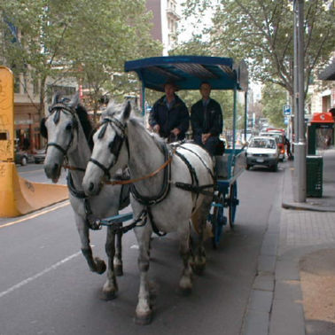
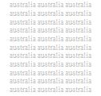
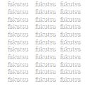

| In Malaysia | In Australia | In Fukutsu | ||
  |
 |
|||
| We enjoyed travel. | I will show you Melbourne. | Domestic Travel | ||
| We enjoyed travel. | Overseas Travel | |||
| I and my wife lived in Malaysia for two years and four month from the end of March,2000 as the first overseas stay. When we came here, a lot of building were stopped with being under construction for a recession, especially mono-rail and KL station etc . Maybe our time I stayed was the turning point to be modern. | We started our lives here in May 2003.
We experienced the western style life and the culture a little bit.
The time came and I left Melbourne for Fukutsu of Japan in May 2005. However, my memory here will be left for good. | After coming back from Australia we have settled down here. My home town Fukuoka is a big city, on the other hand Fukutsu is a small and new city which is about 23.3 kilometers from Fukuoka. In 24 Jan fukutsu was created with two towns, Fukuma and Tuyazaki. |
|
Recent Travel Nagasaki 2026/4/21-4/22 Hokkaido 2025/7/22-7/24 |